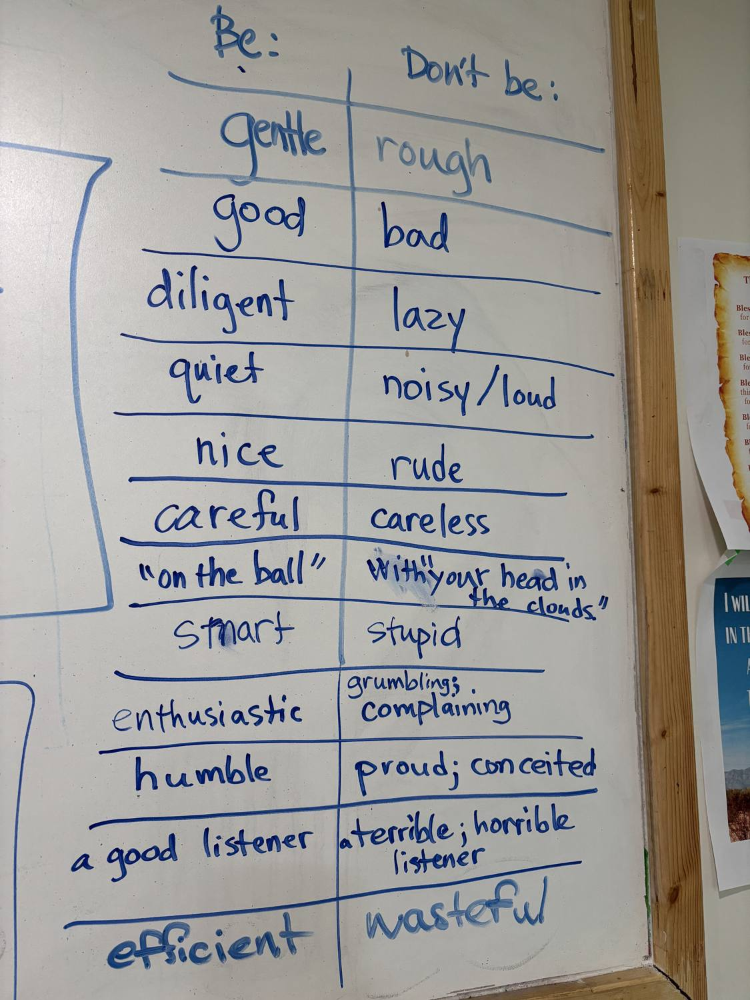
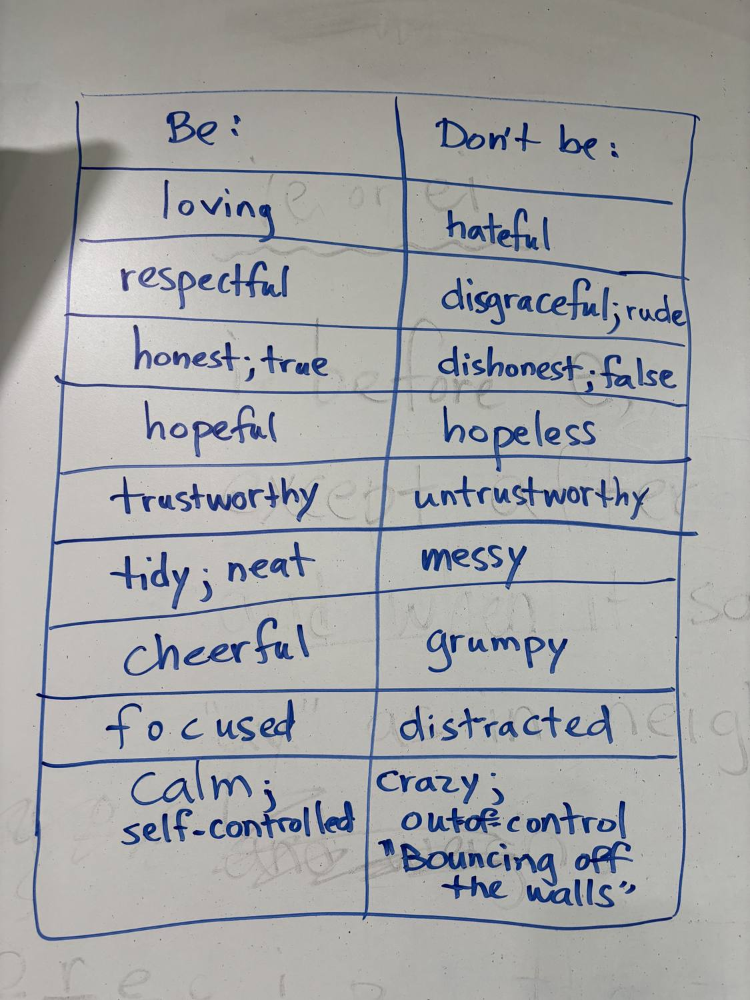
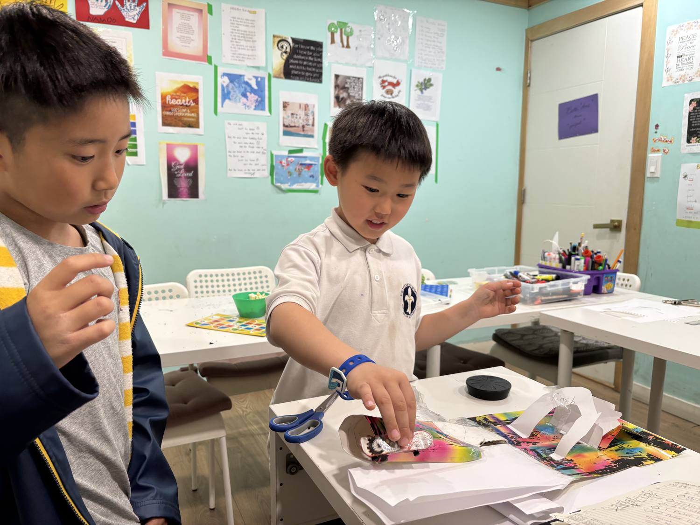
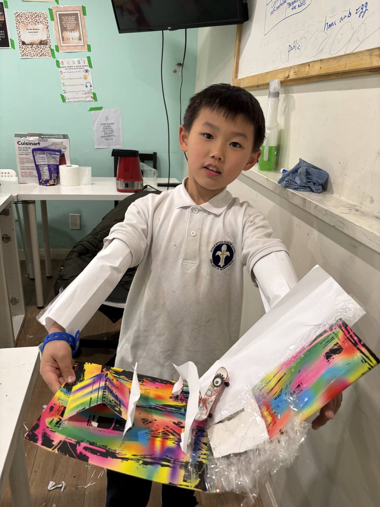
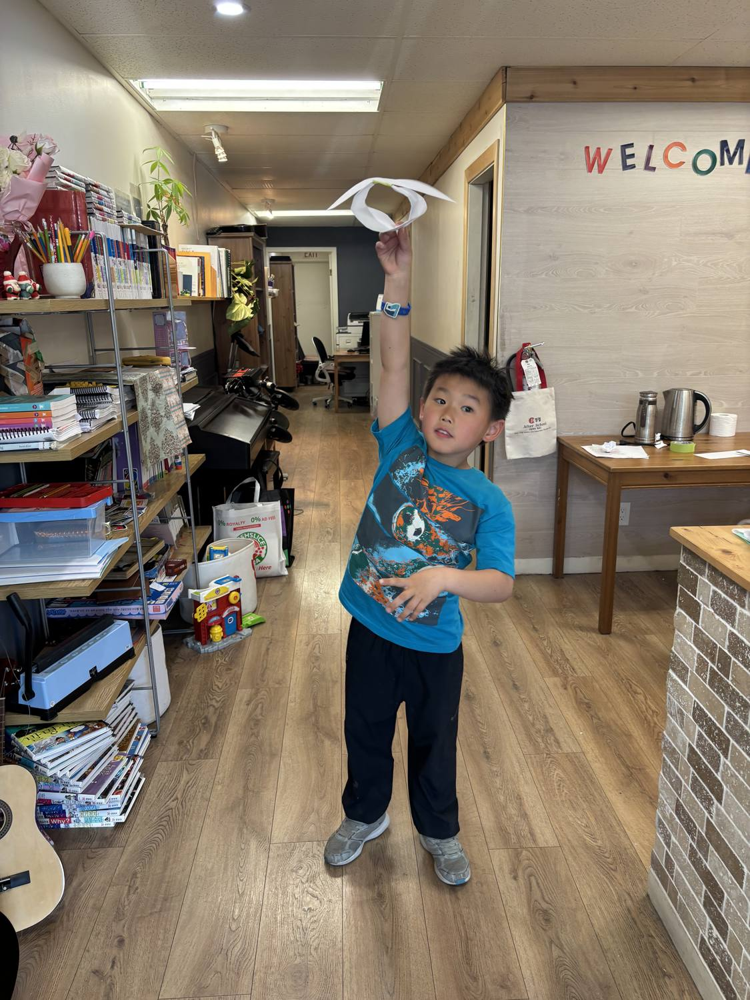
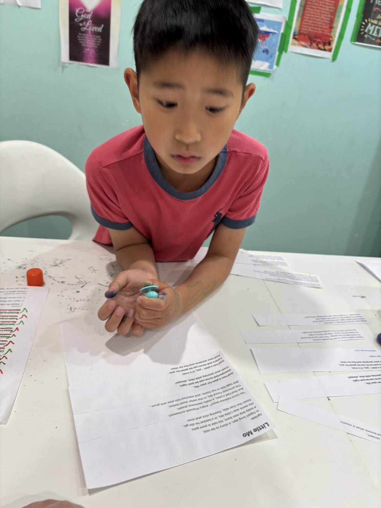
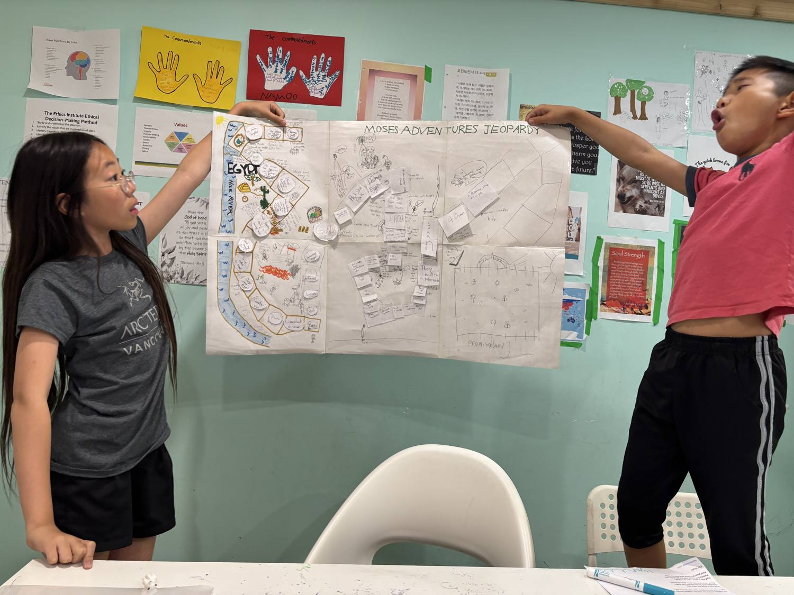
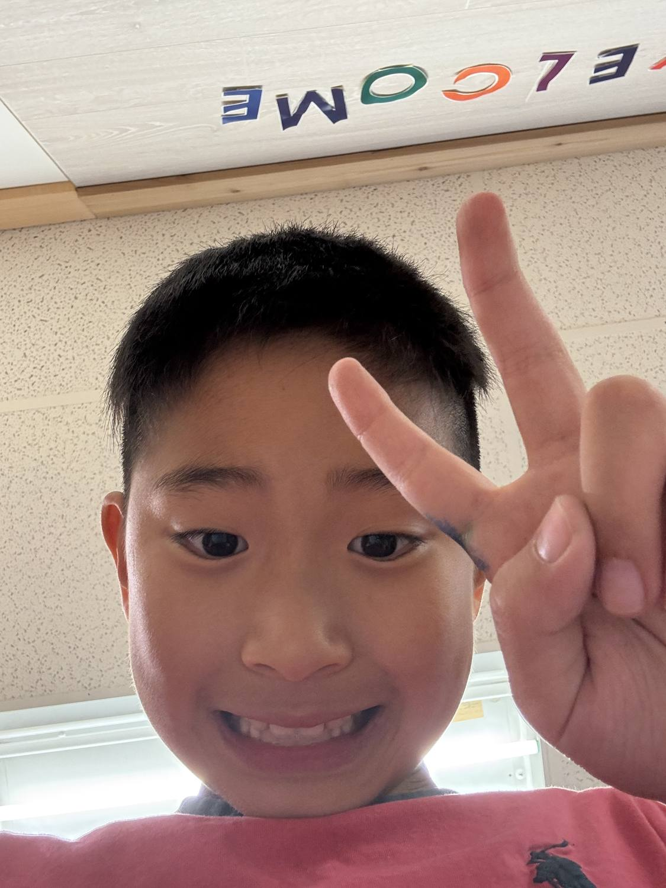

In Class — Verb Tenses, Hands-On Art & Bible: Moses
What a full and joyful day in class! Today the children moved between grammar, hands-on art, and our Bible lesson — building both skills and character along the way. Here is a little window into everything they got up to. 📚
Mapping out the verb tenses ✍️
We spent time laying out the English verb tenses together — Past, Present, and Future — working all the way from the Simple Past and Past Continuous up to the Future Perfect Continuous. Seeing the full family of tenses side by side on one wall helps the students feel exactly how time and meaning shift with each form, and that understanding feeds straight into the clearer, more controlled writing we have been practicing. (And yes — there was room for a paper-doll character to join the lesson, too!)

“Be… / Don’t be…” — words that build character
We also built out a big “Be… / Don’t be…” word study, pairing up rich describing words with their opposites: gentle vs. rough, diligent vs. lazy, “on the ball” vs. “with your head in the clouds,” humble vs. proud, focused vs. distracted, and calm & self-controlled vs. “bouncing off the walls.” It is vocabulary building and character building at the same time — the kind of words that make writing more precise and conversations more thoughtful.


Hands-on art & paper gliders ✈️
After all that focused thinking, it was time to create! The students made bright, spray-and-marker art pieces and folded their own paper gliders — then took them out to the hallway for some very enthusiastic test flights. Learning sticks best when hands, eyes, and imagination are all working together.



Bible lesson — the story of Moses 🙏
Our Bible lesson today told the story of Moses — “Little Mo,” as our song calls him — the baby placed in a basket on the Nile, found by Pharaoh’s daughter, and raised to one day lead his people to freedom. To make the story their own, the students designed their very own “Moses Adventures Jeopardy” board game, complete with an Egypt-to-freedom game path. Faith, history, teamwork, and a whole lot of creativity, all in one project.


Keep these stories and these good words close, everyone — and we’ll see you next class! 💕💕💕
